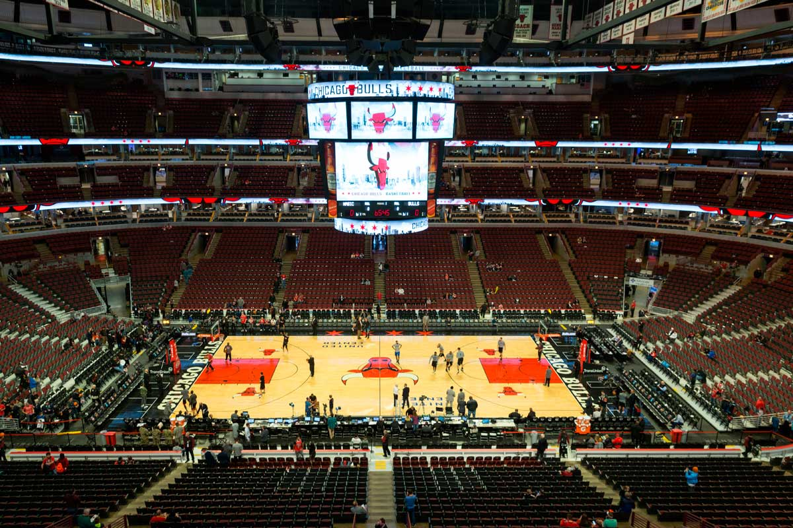
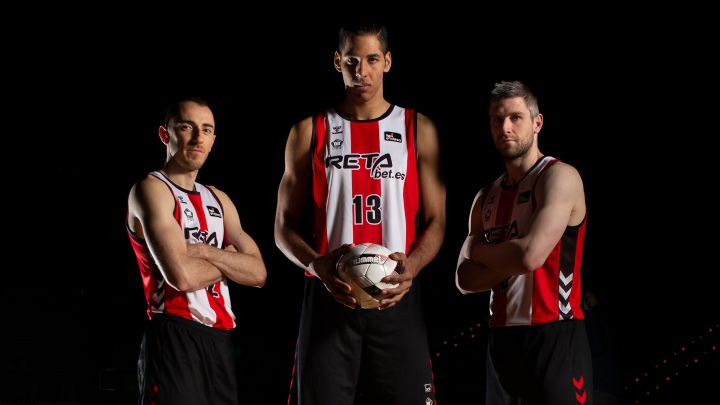

Actualidad|Webilbao
Webilbao FC se prepara para una temporada histórica: ¡Nuevas contrataciones y ambiciosos objetivos!
El club de fútbol Webilbao busca conquistar los corazones de sus seguidores y ascender en la liga local.
10 de octubre de 2023
Webilbao, el club de fútbol con sede en Bilbao, ha desatado la emoción entre sus seguidores y la comunidad futbolística en general con sus recientes movimientos en el mercado de fichajes y sus audaces planes para la temporada 2023-2024. Este modesto equipo, conocido por su pasión y espíritu de lucha, está listo para dejar huella en el mundo del fútbol.
El director deportivo de Webilbao, Eneko Rodriguez, ha estado trabajando incansablemente para reforzar el equipo. Entre las adquisiciones más notables se encuentran el mediocampista creativo argentino, Diego Maratrona, quien llega procedente del fútbol europeo, y el delantero brasileño, Carlos Largos, conocido por su capacidad para marcar goles desde cualquier posición.
En una conferencia de prensa emocionante, el presidente de Webilbao, Eneko Rodriguez, compartió la visión del club para la temporada. "Estamos decididos a dar lo mejor de nosotros en cada partido y ascender en la liga local. Nuestro objetivo final es llegar a la máxima categoría del fútbol español y competir a nivel nacional e internacional. Creemos en el talento de nuestros jugadores y en el apoyo inquebrantable de nuestros fieles seguidores".

Los aficionados de Webilbao han estado respondiendo con entusiasmo a la noticia de las nuevas contrataciones y los ambiciosos objetivos del club. Las redes sociales se han inundado de mensajes de apoyo, y la venta de abonos para la próxima temporada se ha disparado.
Con una plantilla fortalecida y un espíritu indomable, Webilbao FC se está preparando para lo que promete ser una temporada emocionante. Los aficionados esperan con ansias ver a su equipo favorito darlo todo en el campo de juego y hacer historia en el mundo del fútbol.